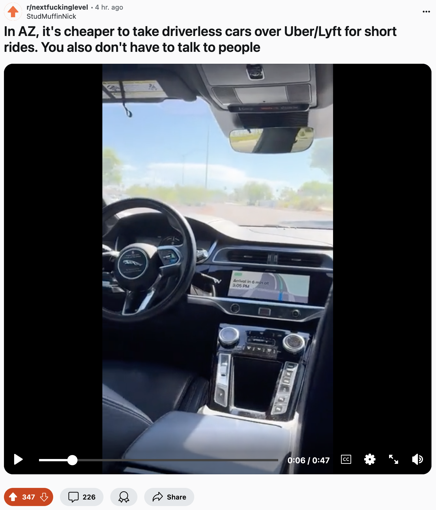
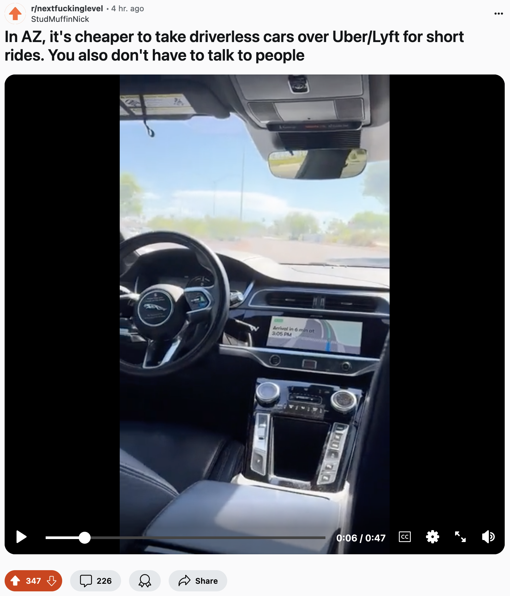

The major difference between trains and trams is that trains travel long distances at high speeds (such as between cities or even countries), whereas trams travel shorter distances at lower speeds (such as within a city). As a result, trams stop more frequently and their stops are closer together. Trams only carry passengers, while trains often carry cargo as well passengers.
Trams are good for 1) Students who don't live close to their school, where they would ordinarily ride a school bus, 2) Teenagers and adults who want to visit a theatre, supermarket, or family a mile away, 3) Adults who live near their workspace, but not near enough to walk, and so forth. Trams are efficient solutions for when you want to go to popular, clustered together places quickly. The problem is this: Our cities aren't built to cluster all life's key locations together.
The problem with trams is that, for a tram route to support all major destinations while still being quick, they can only be adopted in smaller communities where necessities of life are clustered close together — but not close enough to be walkable (as in a "15 minute city"). Additionally, larger communities have more people, and trams are only so big. A person might elect to drive ten minutes in a personal vehicle rather than ride in a tram crowded with strangers.